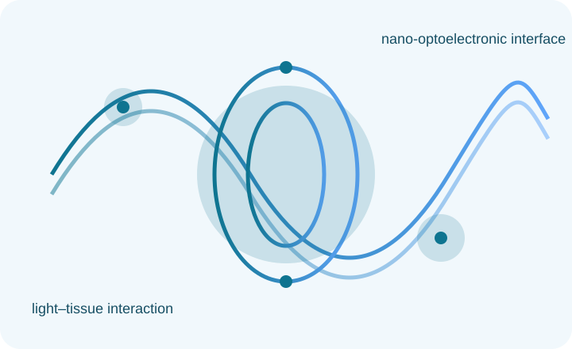
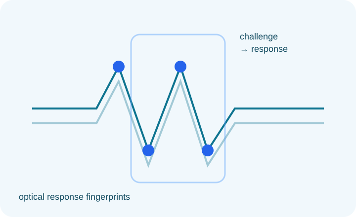
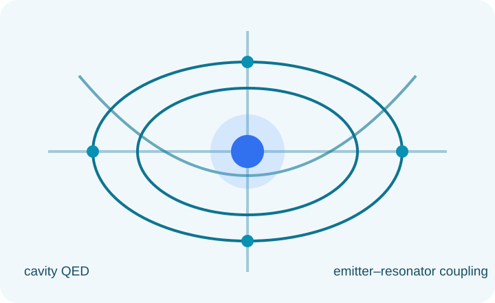
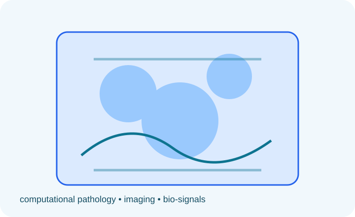

Nano-bio-optoelectronic sensing
Research direction: model novel optoelectronic geometries for tissue-level biological sensing, combining nanoscale optical interaction, transduction, and electrical characterization.
Research directionBiosensing

MTJ / CMOS hybrid circuit modelling
HSPICE-based compact and equivalent-circuit modelling of spintronic devices integrated with CMOS logic and memory; connects microscopic mechanisms to circuit-level behavior.
CV projectHSPICECMOS–MTJ
STT-MRAM architecture & reliability
Investigation of read/write mechanisms, switching reliability, energy efficiency, and circuit-level modelling of magnetic memory. Related ongoing research discussions include hybrid DRAM–STT-MRAM adaptive ECC.
Research projectMemory systems

Graphene spin-transport modelling
HSPICE-based modelling of spin Hall and inverse spin Hall effects and translation of device physics into circuit modules; includes graphene and ferromagnetic van der Waals heterostructure studies.
CV projectSpin transport

Optical PUFs for biomedical IoMT security
Research on plasmonic, nanodiamond quantum-optical, and chaotic nonlinear-resonator PUFs for hardware security, including securing invasive biomedical sensors in tissue.
SPIE presentationsPUF

Quantum photonic systems & cavity QED
Simulation of cavity-QED and multilevel systems, nanodiamond colour centres coupled to silicon Mie resonators, emitter performance in nanophotonic cavities, and fibre-optic quantum communication.
Purdue researchQuTiP
Photonic crystal & optical device modelling
Numerical modelling of photonic structures and optical transmission characteristics using electromagnetic and computational methods including FDTD and Green's functions.
CV projectFDTD
AI for photonic & metamaterial design
Deep-learning, genetic-algorithm, and reinforcement-learning approaches for optimization of plasmonic, metamaterial, and photonic structures; includes quantum optomechanical experiment design.
CV projectInverse design

Computational pathology & pulmonary imaging
Exploration of deep-learning methods for histopathology classification, cancer-tissue detection, chest X-ray analysis, and lung nodule detection using datasets including LUNA16.
Research explorationMedical AI
Bioelectric signals & edge AI for IoMT
Exploring graph neural networks, recurrent networks/LSTMs, and time-series analysis for physiological signals and gait data, alongside edge-AI methods for IoMT security, accuracy, reliability and privacy.
Research directionBio-signals
Neuromorphic photonic & spintronic hardware
Investigation of deep-learning architectures and hardware-oriented implementations for nanophotonic and spintronic computing, including memristive and neuromorphic spintronic devices.
Research directionUnconventional computing
Efficient AI & hybrid quantum-classical workflows
UT Dallas research experience evaluating quantum-classical ML frameworks and INT4/INT8/INT16 quantization for CNN architectures; review of circuit gate-cutting and optimization workflows.
UT Dallas · 2024–25QiskitPyTorch